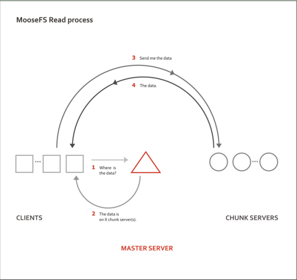
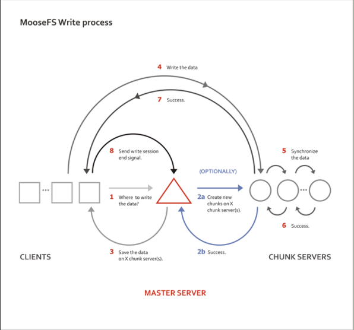

MOOSEFS总结
简介
moosefs是一个高容错的分布式文件系统。它将数据存储在多个物理位置，但是对用户可见为一个资源。对moosefs文件系统的操作类似于unix-like系统。
moosefs包括四个组件：
- Managing servers (master servers)：存储每个文件的元数据（文件大小，属性以及位置，非正常文件的所有信息，例如目录，套接字，管道，以及设备）
- Data servers (chunk servers) ：任意数量的服务器保存着数据文件，且之间相互同步数据（支持一份文件存在多份副本）
- Metadata backup server(s) (metalogger server)：任意数量的服务器，保存着元数据变化日志和间断性从master下载的元数据文件。当master宕机时可以很容易的将metalogger切换成master。
- Client computers that access (mount) the les in MooseFS：任意数量的服务器可以通过mfsmount连接管理服务器（接收和修改元数据），chunkservers（修改实际数据）
工作原理：


元数据存储在管理服务器的内存中同时保存在硬盘（通过一段时间更新二进制文件以及时刻更新增加的日志）。同时这些数据会同步到metologger中。
文件数据在chunks中被划分成64M的片段。高可用性通过设置“goal”值（副本保存的数量）来实现。
源代码安装
1. 安装编译包
CentOS/RHEL: sudo yum install gcc make libpcap-devel zlib-devel fuse-devel pkgconfig
2. Install at least one Master Server
- Install
moosefs-masterpackage - Prepare default config (as
root):
cd /etc/mfs
cp mfsmaster.cfg.sample mfsmaster.cfg
cp mfsexports.cfg.sample mfsexports.cfg
File mfsmaster.cfg contains master server settings. You can find out more information about this fi le in the man pages (man mfsmaster.cfg).
File mfsexports.cfg speci es which users' computers can mount the le system and with what privileges. For example, to specify that only machines addressed as 192.168.2.x can use the whole structure of MooseFS resources (/) in read/write mode, in the first line which is not commented out change the asterisk (*) to 192.168.2.0/24, so that you'll have:
192.168.2.0/24 / rw , alldirs , maproot =0
- Prepare the metadata file (as
root):
cd /var/lib/mfs
cp metadata.mfs.empty metadata.mfs
chown mfs:mfs metadata.mfs
rm metadata.mfs.empty
- Run Master Server (as
root):mfsmaster start - Make this machine visible under
mfsmastername (e.g. by adding a DNS entry or adding it in/etc/hostson all servers)
3. Install at least two Chunkservers
- Install
moosefs-chunkserverpackage - Prepare default config (as
root):
cd /etc/mfs
cp mfschunkserver.cfg.sample mfschunkserver.cfg
cp mfshdd.cfg.sample mfshdd.cfg
- At the end of
mfshdd.cfgfile make one or more entries containing paths to HDDs / partitions designated for storing chunks, e.g.:
/mnt/chunks1
/mnt/chunks2
/mnt/chunks3
It is recommended to use XFS as an underlying filesystem for disks designated to store chunks.
注意：该目录为实际存储数据的目录。
- Change the ownership and permissions to
mfs:mfsto above mentioned locations, e.g.:
chown mfs:mfs /mnt/chunks1 /mnt/chunks2 /mnt/chunks3
chmod 770 /mnt/chunks1 /mnt/chunks2 /mnt/chunks3
- Start the Chunkserver:
mfschunkserver start
Repeat steps above for second (third, ...) Chunkserver.
3. Client side: mount MooseFS filesystem
- Install
moosefs-client fuse libfuse2packages - Mount MooseFS (as
root):
mkdir /mnt/mfs
mount -t moosefs mfsmaster: /mnt/mfs
or: mfsmount -H mfsmaster /mnt/mfs
- You can also add an
/etc/fstabentry to mount MooseFS during the system boot:
mfsmaster: /mnt/mfs moosefs defaults,mfsdelayedinit 0 0
There are more configuration parameters available but most of them may stay with defaults. We do our best to keep MooseFS easy to deploy and maintain.
MooseFS, for testing purposes, can even be installed on a single machine!